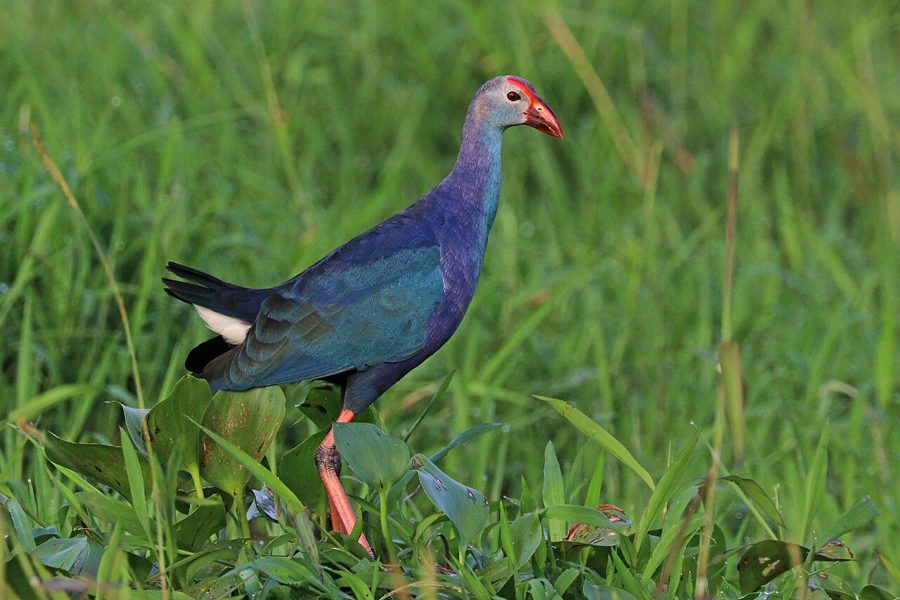

कैमGrey-headed Swamphen
Porphyrio poliocephalus · Rallidae · BRD-0041

- Scientific name
- Porphyrio poliocephalus (Latham, 1801)
- Family
- Rallidae
- Hindi
- कैम
- Status here
- native
- IUCN
- LC
When to look कब देखें
Present all year.
कैम / Grey-headed Swamphen
Porphyrio poliocephalus (Latham, 1801) — Rallidae
कैम (ग्रे-हेडेड स्वैम्पहैन) — पूर्वी उत्तर प्रदेश के तालाबों, झीलों और दलदली इलाकों में पाया जाने वाला एक बड़ा, चमकीला और आकर्षक जलपक्षी है। इसका शरीर मुख्य रूप से बैंगनी-नीला (purplish-blue) होता है, जिसके सिर का हिस्सा धूसर-नीला (greyish-blue) होता है। इसकी सबसे बड़ी विशेषता इसकी भारी लाल चोंच और उसके ऊपर माथे पर फैला चमकीला लाल ढाल (frontal shield) है। इसके पैर बहुत लंबे और लाल रंग के होते हैं, जिनकी उँगलियाँ लंबी होती हैं जो दलदली वनस्पतियों पर चलने में मदद करती हैं। यह जलीय पौधों के तनों, कोमल कलियों और बीजों को खाता है और तैरते हुए पौधों के मलबे से बड़ा घोंसला बनाता है।
Quick Identification त्वरित पहचान
| Feature | Description |
|---|---|
| Size | Large marsh bird (43–48 cm total length); wingspan 80–85 cm |
| Colouration | Bright purplish-blue body; pale greyish-blue head and throat; turquoise-blue breast |
| Bill & Shield | Extremely heavy, thick red bill and a bright crimson-red frontal shield on the forehead |
| Legs | Long, pale red to pinkish-red legs and very long, slender toes; lacks webbing |
| Tail | Short, flicking tail showing white under-tail coverts when walking |
Field tip: Look for a large purple bird walking clumsily among reeds or feeding on agricultural crop margins near wetlands. Its heavy red bill and the stark white patch under its short, flicking tail are highly visible.
Morphology आकारिकी
Biometrics (typical measurements in the northern Indian plains):
| Measurement | Range |
|---|---|
| Total length | 430–480 mm |
| Wing (flattened chord) | 240–285 mm |
| Tail | 80–105 mm |
| Tarsus | 85–100 mm |
| Bill (culmen from base) | 40–50 mm |
| Weight | 600–850 g |
Plumage: The crown, sides of the head, and throat are pale greyish-blue or lilac-grey. The breast and sides of the body are rich cobalt or turquoise-blue. The back and wings are deep purplish-blue, shading to black on the primary flights. The belly and flanks are dark purplish-black. The under-tail coverts are pure white and contrast strongly with the dark body, acting as a visual signal during tail-flicking.
Bare parts: The massive bill and broad frontal shield are bright red, becoming deeper crimson during the breeding season. Irises are red or reddish-brown. The long legs and toes are pale red to dark pink, with greyish joints.
Vocalisations
Grey-headed Swamphens are loud and make a variety of harsh sounds.
- Advertising Call: A loud, nasal, screeching hark-hark or cack-cack, often ending in a low grunt.
- Alarm Call: A sharp, metallic chack or plink, repeated rapidly when a predator or human approaches.
- Contact Call: Low, guttural grunts and chuckles made while foraging in dense reed beds.
Ecological Role पारिस्थितिक भूमिका
Herbivorous wetland builder.
- Aquatic herbivory: They consume massive quantities of young shoots, roots, and rhizomes of aquatic plants, keeping dense reed growth under control.
- Nesting platforms: They pull down and trample reeds to build nests and feeding platforms, creating open water patches within dense marsh vegetation.
- Seed dispersal: By feeding on seeds of sedges and grasses, they help disperse wetland plants across disconnected water bodies.
Life Cycle / Phenology जीवन चक्र
- Breeding season: June to September, coinciding with the southwest monsoon when wetlands fill and vegetation cover is highest.
- Nesting: They build a large, bulky plate-like nest of dry reeds, sedges, and grasses.
- Nest site: Placed deep in dense reed beds or floating on water hyacinth mats, slightly elevated above the water level.
- Clutch size: 3 to 6 pale buff or cream-coloured eggs, covered in small spots of reddish-brown and purple.
- Incubation: 23–27 days, shared by both parents.
- Fledging: The chicks are nidifugous (leave the nest shortly after hatching), covered in black down, and can swim immediately. They are fed by both parents and occasionally by helpers (sub-adults from previous broods). They fledge in 50–60 days.
Host Plants or Prey आहार
Primary food items:
- Vegetation: Shoots, roots, and seeds of reeds (Typha), sedges, water lilies, and wild grasses. They are known to feed on rice plants in adjacent fields.
- Insects: Aquatic beetles, grasshoppers, and water bugs.
- Other Animal Matter: Small frogs, pond snails, and occasionally carrion or eggs of other waterbirds.
Predators / Natural Enemies शत्रु
- Raptors: Large eagles (such as the Marsh Harrier) prey on adults and juveniles.
- Reptiles: Large monitor lizards and water snakes raid nests for eggs.
- Mammals: Jackals (Canis aureus) and feral dogs search reed bed edges for nests during dry spells.
Agricultural / Human Relevance कृषि प्रासंगिकता
Crop visitor. In Basti district, swamphens regularly enter paddy fields adjacent to wetlands to feed on young rice stalks and grains. They can cause minor localized damage to crops by trampling the plants.
However, they also feed on agricultural insect pests, balancing their impact. They are sometimes hunted locally for meat, though this is illegal under wildlife protection laws.
Expected Locally स्थानीय रूप से अपेक्षित
Not a field record. Written from published accounts for eastern Uttar Pradesh. No confirmed local sighting yet — if you have seen it, that is what the atlas needs.
अभी तक स्थानीय पुष्टि नहीं। यह विवरण प्रकाशित स्रोतों से है, किसी अवलोकन से नहीं।
A common resident in perennial marshes and reed-filled tanks (talab) throughout Basti. Large numbers can be seen in the marshes around the Ghaghra river floodplain and larger village water bodies. They are often observed holding food items (such as reed stems) in one foot and biting off pieces, a characteristic parrot-like feeding behavior.
Distribution वितरण
Global range: Widespread across the Middle East, the Indian Subcontinent, Southern China, and Southeast Asia.
In India: Found throughout the plains near permanent wetlands and lakes.
In Uttar Pradesh: A common resident in all marshy wetlands, floodplains, and irrigation canals.
In Basti district / eastern UP: Abundant in low-lying waterlogged areas, village ponds, and lakeside reed beds.
Research Questions शोध प्रश्न
Anyone can investigate these | कोई भी इन प्रश्नों की जाँच कर सकता है
- How does the presence of swamphens affect the density of invasive water hyacinth in small village ponds? — Monitor ponds with and without swamphens.
- What percentage of their daily diet in Basti consists of cultivated rice compared to wild marsh vegetation? — Observe foraging birds at field margins.
- Do swamphens show cooperative breeding behaviors (helpers at the nest) in eastern UP wetlands? — Document nesting pairs and additional feeding birds.
- How do swamphens modify their nest heights in response to sudden monsoon water level rises? / मॉनसून में पानी का स्तर अचानक बढ़ने पर कैम अपने घोंसले की ऊंचाई को कैसे बढ़ाते हैं? — Measure nest heights during rains.
- Does the clearing of Typha reed beds by local villagers affect swamphen breeding success? / ग्रामीणों द्वारा टाइफा (नरई) के जंगलों की कटाई का कैम के प्रजनन की सफलता पर क्या प्रभाव पड़ता है? — Compare nesting success in harvested vs. unharvested zones.
Similar Species मिलती-जुलती प्रजातियाँ
| Species | Key Difference | हिंदी |
|---|---|---|
| Common Moorhen (Gallinula chloropus) | Much smaller (30–35 cm); dark slate-grey body; yellow-tipped red bill; white stripe along flanks | जलमुर्गी — छोटी, स्लेटी शरीर, पीली नोक वाली लाल चोंच |
| Purple Moorhen (Porphyrio porphyrio) | Now restricted to Europe/Africa; lacks the distinct turquoise-blue breast and pale head of the Indian bird | यूरोपीय स्वैम्पहैन — भारत में नहीं पाई जाती |
| [BRD-0039 White-breasted Waterhen] (Amaurornis phoenicurus) | Smaller; stark white face and breast; olive-green bill with red base; lacks frontal shield | डहुआ — छोटी, सफेद चेहरा और छाती, लाल ढाल रहित |
| [BRD-0040 Bronze-winged Jacana] (Metopidius indicus) | Smaller; bronze-green wings, white eye stripe, spider-like toes, yellow frontal shield | दल-पीपी — छोटी, कांस्य पंख, आँखों के ऊपर सफ़ेद पट्टी |
Field rule: Bright purplish-blue body, pale greyish head, massive red bill and frontal shield, and long pinkish-red legs identify the Grey-headed Swamphen.
Taxonomy & Classification वर्गीकरण
Original description. John Latham described the Grey-headed Swamphen as Gallinula poliocephala in 1801 in his work Supplementum Indicis Ornithologici (p. lxviii). The type locality was India. The genus name Porphyrio is derived from the Greek porphurion, the ancient name for the purple swamphen. The specific name poliocephalus combines the Greek polios (grey) and kephale (head).
Subspecies. Monotypic in India (nominate P. p. poliocephalus occurs across the subcontinent).
Family and order placement. Placed in the order Gruiformes, family Rallidae.
Phylogenetic notes. Porphyrio poliocephalus was historically considered a subspecies of the widespread Porphyrio porphyrio (Purple Swamphen) species complex, but was split as a distinct species based on differences in plumage coloration, structural morphology, and biogeographic isolation.
IUCN status rationale. Listed as Least Concern (LC) due to its extensive geographic distribution, stable population trends, and adaptability to human-influenced habitats such as agricultural fields.
Photo Gallery फोटो गैलरी
References संदर्भ
- Latham, J. (1801). Supplementum Indicis Ornithologici, Sive Systematis Ornithologiae. London, p. lxviii. [original description]
- Ali, S. & Ripley, S. D. (1999). Handbook of the Birds of India and Pakistan. Vol. 2. Oxford University Press, New Delhi.
- Grimmett, R., Inskipp, C. & Inskipp, T. (2011). Birds of the Indian Subcontinent. 2nd ed. Christopher Helm, London.
- Taylor, B. & van Perlo, G. (1998). Rails: A Guide to the Rails, Crakes, Gallinules and Coots of the World. Pica Press, Sussex.
- BirdLife International (2024). Porphyrio poliocephalus. IUCN Red List of Threatened Species. Ver. 2024.
- GBIF Occurrence Data — Porphyrio poliocephalus, Uttar Pradesh (2010–2025).
Source file: species/fauna/birds/grey_headed_swamphen.md